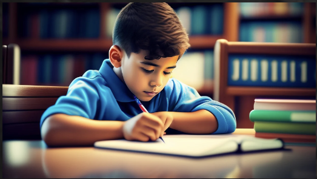

Online Activity Portal
The Eco-Friendly Online Fee Payment & Activity Portal introduces an innovative, environmentally conscious solution for educational institutions. With a user-friendly interface, it streamlines fee payments and activity management, prioritizes security, and promotes sustainability through paperless transactions. This forward-thinking platform aims to enhance the overall experience for students, parents, and administrators.
